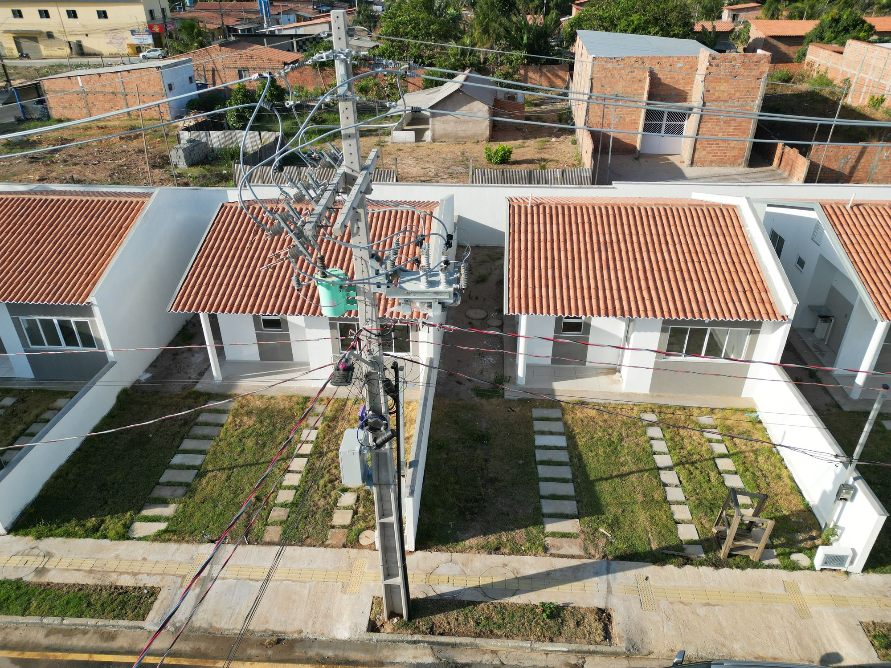
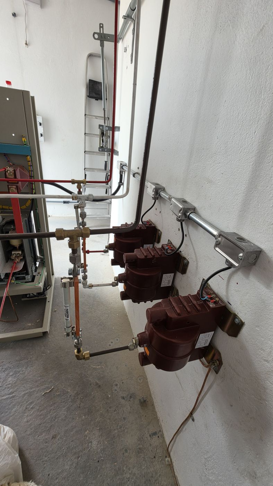
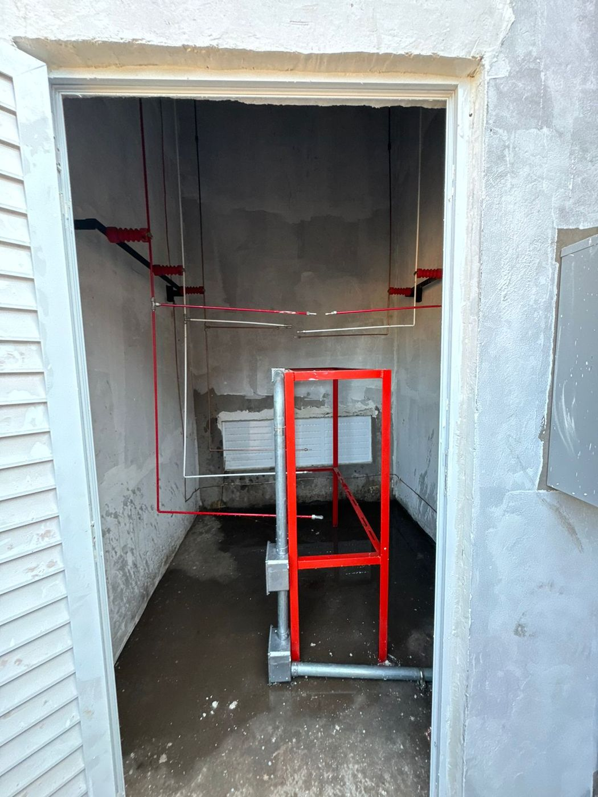
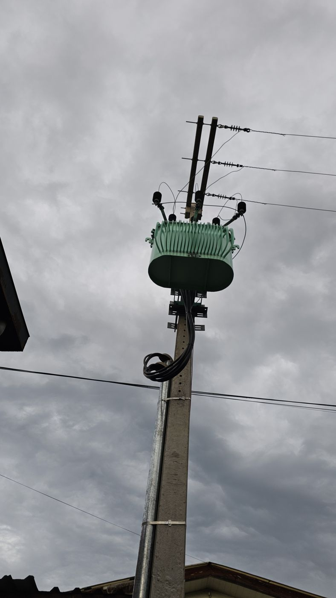
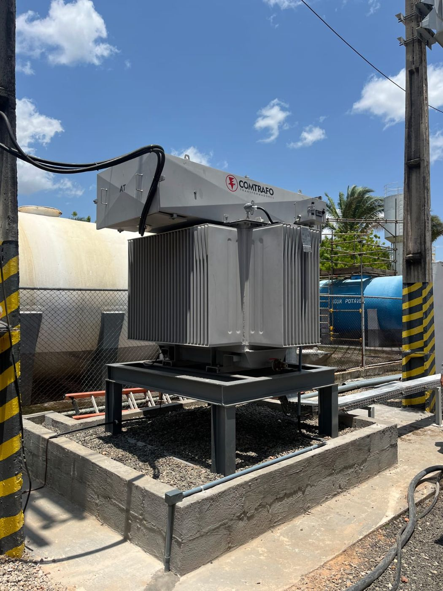

Subestação aérea
Transformador instalado em poste. Costuma atender cargas menores e terrenos onde não cabe uma cabine.
Subestações e entrada de energia
Projetamos, levamos à aprovação da concessionária e construímos a subestação do seu negócio, aérea ou abrigada, com ART.

O escopo exato de cada obra vem na proposta.
Qual tipo é o seu?
Qual é a indicada para você depende da carga, do espaço e das exigências da Equatorial. Nós ajudamos a escolher.
Transformador instalado em poste. Costuma atender cargas menores e terrenos onde não cabe uma cabine.

Cabine de medição, proteção e transformação. Indicada para cargas maiores e instalações que pedem mais proteção.

Medição coletiva para condomínios, centros comerciais e prédios com muitas unidades consumidoras.
Como funciona
O prazo de cada etapa depende da obra e da análise da concessionária. Você acompanha o andamento e é avisado a cada mudança.
Obras



Depende da carga total e da regra da Equatorial para o seu caso. Enviando a lista de equipamentos e o endereço, dizemos o caminho. Limite de carga: [confirmar].
Podemos fazer a obra com ou sem o fornecimento do transformador. Combinamos isso na proposta.
Depende do tipo, da potência e do local, então não há preço fechado sem conhecer a obra. Mande os dados pelo WhatsApp e retornamos com a proposta.
Cidade, tipo de negócio e equipamentos principais já bastam para começar.